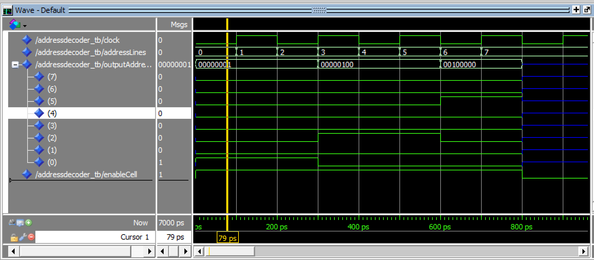

|
Brainf*ck computer 0.1
A silly little BF-running computer based on the Lattice ECP5 FPGA
|
|
Brainf*ck computer 0.1
A silly little BF-running computer based on the Lattice ECP5 FPGA
|
For both RAM and ROM, I've devised a system. Basically, a memory module is formed of two main components:
As for the decoder, this seems like the easy part. A simple shift register should do, just to yoink the data on a clock pulse? Well, not quite. I'm still trying to wrap my head around it, but, briefly, here's the deal: I went for a time-based approach. Everything in this design should be clocked, each pulse (i.e. transition from high to low) being a time quanta. We can therefore describe the "performance" of each element in terms of "time quantas" (aka TQ's).
The first design was a one-TQ one, one that, as soon as it received a pulse, it shifted the data onto the lines. Well... then I hit a snag:

The answer lies in... signal propagation. You simply cannot shift data onto a bus, then process it, on the same TQ. So, I fixed it by extending the decoder to run on 2 TQ's...
Well, well! This looks better, but... Interestingly, it seems that... It's skipping the odd numbers? It was at this point that I started testing using testbenches (up until now I had loaded the signal into ModelSIM and generated the signals manualy (smart, I know)), and started to notice... the approach was more than flawed... it was dangerously so.
I realized I would need a new system. Especially when loading RAM (which supports both read and write), I'd run into a limit: number of edges of a pulse. If I were to, say, set the address decoder on the rising edge, then have the ram return the data on the falling edge, it would work:
| TQ 1 | TQ 2 |
|---|---|
| RAM CS set | RAM cell puts data onto the bus |
But what about writing? We'll assume some other source (the ALU, for example) writes data to a RAM cell. We'll call this our stimulus.
| TQ 1 | TQ 2 |
|---|---|
| RAM CS set | Stimulus writes data to bus / RAM cell reads data |
Oof. We're back to square one, with synchronization at the forefront of the problem. The stimulus would have to write the address and data lines during TQ0 (some time before TQ1), then the cell would route the address during TQ1 and would perform the action needed. But in reverse? The cell would have to decode the address during TQ1, then shift data out during TQ2, at which point the stimulus would have to process the data, which would once again result in an overlap.
In the end, I settled for a 3-TQ design. This would at least eliminate some of the headache. I'll test it later to see if I can make it more efficient.
| TQ 1 | TQ 2 | TQ3 |
|---|---|---|
| Stimulus sets address | Address is decoded -> sync (ready) pulse emitted | RAM chip reads data / writes data |
Not only does this signal look much better (it actually increments properly), you notice a "parallel" clock signal, pulsing on the "ready" line, which can be used to... [drumroll, please!] provide a clock cycle for a downstream RA(O)M cell, one where we are sure that the routing is complete and data is ready. Huzzah, the decoder is ready!